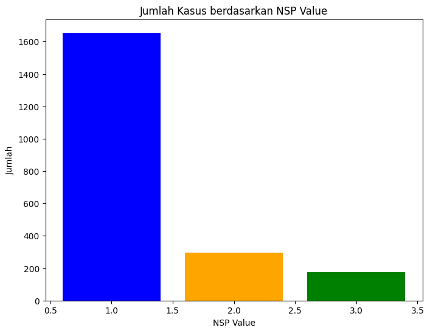
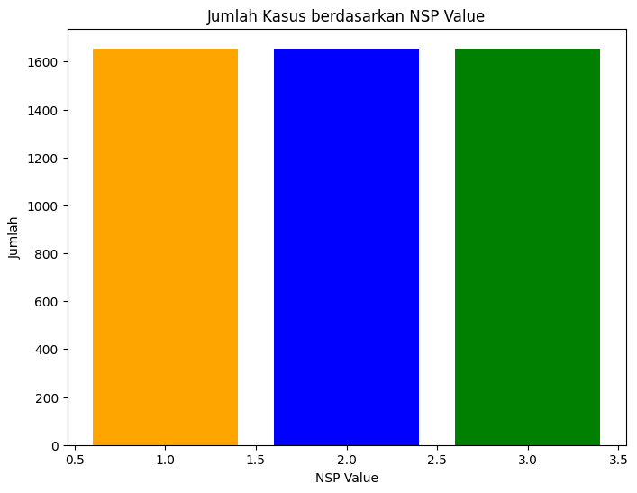
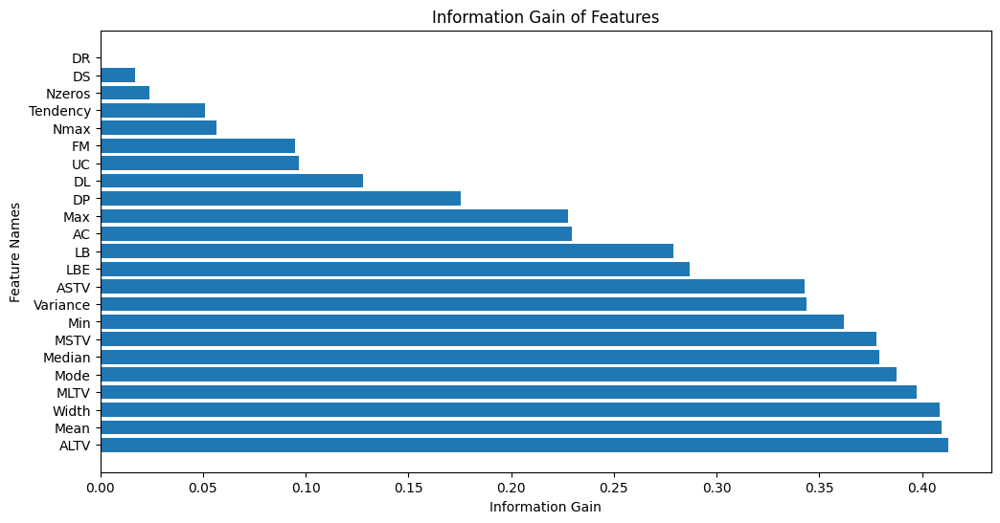

import pandas as pd1 ———————–Tugas Akhir PSD———————–
NAMA :AJENG GUSTI PUTRI CEMPAKA SARI
NIM : 210411100010
KELAS : PSD B
MODEL : MENGGUNAKAN DECISION TREE
2 BUSSINESS UNDERSTANDING
2.1 TUJUAN PROYEK
Mengidentifikasi keadaan janin pada ibu hamil melalui mesin cardiotocografi yang direkam oleh Institut Teknik Kedokteran (Biomedical Engineering), Porto, Portugal. Keadaan janin dapat teridentifikasi melalui nilai regresi sebagai berikut : - Mengindikasikan bahwa keadaan janin dalam kondisi normal dan tidak menunjukkan adanya masalah atau patologi yang signifikan. Maka dinyatakan “Normal” atau bernilai 1
Menunjukkan bahwa ada beberapa tanda atau pola pada cardiotocogram yang mungkin mencurigakan atau memerlukan pemantauan lebih lanjut. Ini tidak sepenuhnya normal, tetapi juga belum tentu menunjukkan masalah serius. Maka dinyatakan “Suspect” atau bernilai 2
Menunjukkan keadaan patologis atau masalah kesehatan yang perlu mendapat perhatian medis lebih lanjut. Ini dapat menandakan risiko atau masalah serius pada janin. Maka dinyatakan “Patologis” atau bernilai 3
Untuk mengidentifikasi keadaan janin dapat dilihat dari ciri - ciri sebagai berikut: 1. LBE (baseline value (medical expert)) 2. LB (baseline value sisporto) 3. AC (Accelerations Sisporto) 4. FM (Foetal Movement sisporto) 5. UC (Uterine contractions sisporto) 6. ASTV (percentage of time with abnormal short term variability (SisPorto)) 7. MSTV (mean value of short term variability (SisPorto)) 8. ALTV (percentage of time with abnormal long term variability (SisPorto)) 9. MLTV (mean value of long term variability (SisPorto)) 10. DL (light decelerations) 11. DS (severe decelerations) 12. DP (prolongued decelerations) 13. DR (repetitive decelerations) 14. Width (histogram width) 15. Min (low freq. of the histogram) 16. Max (high freq. of the histogram) 17. Nmax (number of histogram peaks) 18. Nzeros (number of histogram zeros) 19. Mode (histogram mode) 20. Mean (histogram mean) 21. Median (histogram median) 22. Varian (histogram variance)
3 DATA UNDERSTANDING
3.1 Teknik Pengumpulan
- Dataset ini berasal dari kaggle dengan link https://www.kaggle.com/datasets/akshat0007/fetalhr. Data ini direkam melalui alat yang disebut cardiotocography. Di dalam alat ini terdapat 3 pendeteksi. Deteksi yang pertama yaitu untuk merekam denyut jantung janin. Deteksi yang kedua yaitu untuk merekam pergerakan janin. Jika janin bergerak si ibu akan menekan tombol. Deteksi yang ketiga yaitu untuk merekam kontraksi dalam uterus. Biasanya perekaman dilakukan selama 30 menit. 10 menit yang pertama untuk membuat si ibu beradaptasi. Menit ke tiga si ibu merasa tenang. Dan menit ketiga si ibu merasa terlalu lama dan tidak nyaman.
- Keluarannya adalah grafik. Sama seperti namanya, Cardiotokografi. (grafi) teknik merekam. (kardio) denyut jantung janin. (toko) kontraksi dlm uterin dan aktifitas janin. Biasanya CTG digunakan untuk janin yang mempunyai resiko mengalami hipoksia(kadar oksigen menurun) dan Intrauterine fetal death (kematian dalam kandungan). Didalam mesin cardiotocography terdapat mesin print dan kertas khusus yang nantinya akan dilakukan proses analisis oleh tim medis. Analisis inilah yang menghasilkan dataset ini.
- Pada dataset ini, memungkinkan untuk melakukan 2 klasifikasi. Yakni yang pertama mencari kategori class, yang memiliki 10 katogori (kolom A sampai SUSP). Kemudian klassifikasi yang ke dua mencari kategori NSP yang memiliki 3 kategori (N, S, P).
- Pada tugas ini, batasan masalah yang akan digunakan adalah, mencari klasifikasi NSP (Normal, Suspect, Patologis).
3.2 Jenis jenis Data Pada Statistik—————————————————
- Data Nominal
Data nominal merupakan data statistik dengan cara penyusunan angka atau bilangan dengan berdasarkan kategori tertentu tanpa memperhatikan urutan. Jadi, semua data dianggap memiliki kedudukan yang sama. Biasanya hal ini dibantu dengan proses pemberian simbol atau label tertentu dengan tujuan untuk membedakan satu kategori dengan kategori lainnya. Oleh karena itu, operasi aritmatika tidak berlaku pada jenis data nominal ini. Sebagai contoh, angka 1 sebagai simbol untuk laki-laik dan angka 2 sebagai simbol untuk perempuan. - Data Ordinal
Data ordinal merupakan data statistik yang cara penyusunan angkanya atau penomoran objek berdasarkan beberapa kategori tertentu dengan memperhatikan urutan tertentu. Pada jenis data ini biasanya mempertimbangkan berdasarkan hasil dari yang paling kecil sampai hasil yang paling rendah, atau sebaliknya. Sebagai contoh jika kita dipeerntah untukmengisi kuesioner kepuasan pelanggan biasanya terdapat pilihan 1 = “tidak baik, 2 =”kurang baik”, 3 = “cukup baik”, 4 = “baik”, 5 = “sangat baik”. Jal ini menunjukkan bahwa dari penomoran paling awal hingga akhir menunjukkan tingkat kepuasan paling rendah sampai paling tinggi. - Data Interval
Data interval merupakan data statistik yang mana penyusunan angkanya antara kategori satu dengan lainnya disusun berdasarkan jarak yang sama. Data interval memiliki sifat yang sama dengan data nominal data ordinal namun bedanya pada data interval memiliki karakter pada jarak yang sama dan jarak tersebut belum berlaku kelipatan dan tidak memiliki nilai nol mutlak. Sebagai contoh, suhu 5 buah benda adalah 32, 35, 38, 41, 44. Kelima data tersebut disebut data interval karena memiliki jarak yang sama di antara setiap data. - Data Rasio
Data rasio merupakan data statistik yang mana cara penyusunannya dengan cara membandingkan antara satu dengan lainnya. Data rasio hampir sama dengan data interval, namun perbedaannya adalah pada data interval memiliki nilai nol mutlak, artinya nilai 0 pada data ini memiliki arti. Sebagai contoh, berat badan A adalah 15 kg sedangkan berat badan B adalah 30 kg. Jadi dari contoh tersebut dapat disimpulkan bahwa berat badan B dua kali lipat dari bedan barat A.
3.3 Penjelasan Fitur dan Jenis Datanya
- FileName
ini adalah nama dari file yang berisikan informasi pemeriksaan. Tipe datanya adalah nominal, karena Nama file merupakan pengidentifikasi unik atau label untuk setiap catatan, dan tidak ada urutan atau signifikansi numerik yang terkait dengan mereka. - Date
ini adalah waktu pemeriksaan. Tipe datanya adlaah ordinal, karena tanggal mewakili urutan kronologis, tetapi interval antara mereka mungkin tidak seragam. Mereka memiliki urutan yang bermakna tetapi tidak memiliki interval yang konsisten. - Segfile,
- b (instant awal)
Mewakili waktu atau titik awal pemeriksaan. bertipe data interval karena Sama seperti tanggal, waktu juga memiliki sifat interval. - e (instant akhir)
Mewakili waktu atau titik akhir pemeriksaan. bertipe data interval karena Sama seperti tanggal, waktu juga memiliki sifat interval. - LBE
Nilai dasar seperti yang ditentukan oleh ahli medis. LBE diukur menggunakan skala numerik yang memiliki nol yang bermakna (seperti suhu dalam derajat Celsius), maka tipe datanya adalah data rasio - LB (baseline value sisporto)
Ini mencerminkan detak jantung janin dalam kondisi normal. Normal: 110-160 detak per menit (bpm). Tipe datanya adalah Rasio, karena mewakili nilai numerik kontinu dengan titik nol yang benar (yaitu, LB bisa nol), dan rasio antara nilai tersebut memiliki makna. - AC (Accelerations Sisporto)
Merupakan peningkatan cepat dan sementara dalam detak jantung janin. Akselerasi adalah tanda baik pada pemeriksaan CTG. Akselerasi di atas 15 bpm dari baseline, berlangsung selama 15 detik atau lebih, menandakan respons janin yang baik. Tipe datanya adalah Rasio, karena Sama seperti LB, AC mewakili nilai numerik kontinu dengan titik nol yang benar, dan rasio antara nilai tersebut memiliki makna. - FM (Foetal Movement sisporto)
Menunjukkan gerakan janin yang terdeteksi selama pemeriksaan. Tipe datanya Rasio, karena FM adalah variabel numerik kontinu dengan titik nol yang benar, dan rasio antara nilai memiliki makna. - UC (Uterine contractions sisporto)
Mencatat aktivitas kontraksi uterus pada ibu hamil. Normal: kurang dari 5 kontraksi dalam 10 menit. Tipe datanya Rasio, karena UC adalah variabel numerik kontinu dengan titik nol yang benar, dan rasio antara nilai memiliki makna. - ASTV (percentage of time with abnormal short term variability (SisPorto))
Mengukur persentase waktu dengan variasi detak jantung pendek yang dianggap abnormal. Normal: kurang dari 10%. tipe data Rasio, karena ASTV mewakili persentase, dan persentase adalah nilai numerik kontinu dengan titik nol yang benar. - MSTV (mean value of short term variability (SisPorto))
Menunjukkan rata-rata variasi detak jantung pendek selama pemeriksaan. Normal: 2-5 bpm. Tipe datanya Rasio, karena ASTV mewakili persentase, dan persentase adalah nilai numerik kontinu dengan titik nol yang benar. Tipe datanya Rasio, karena Sama seperti ASTV, mSTV adalah nilai rata-rata, dan rasio antara nilai memiliki makna. - ALTV (percentage of time with abnormal long term variability (SisPorto))
Mengukur persentase waktu dengan variasi detak jantung panjang yang dianggap abnormal. Normal: kurang dari 10%. Tipe datanya Rasio, karena ALTV mewakili persentase, dan persentase adalah nilai numerik kontinu dengan titik nol yang benar. - MLTV (mean value of long term variability (SisPorto))
Menunjukkan rata-rata variasi detak jantung panjang selama pemeriksaan. Normal: 6-25 bpm. Tipe datanya Rasio, karena Sama seperti ALTV, mLTV adalah nilai rata-rata, dan rasio antara nilai memiliki makna. - DL (light decelerations)
Mencatat decelerasi ringan dalam detak jantung janin. Decelerasi dengan durasi kurang dari 30 detik, dengan detak jantung janin turun kurang dari 30 bpm dari baseline. Tipe datanya Ordinal, karena Decelerations ringan mungkin memiliki tingkat keparahan yang berbeda, dan ada urutan yang bermakna untuk tingkatan tersebut. - DS (severe decelerations)
Mencatat decelerasi parah dalam detak jantung janin. Decelerasi dengan durasi lebih dari 60 detik, dengan detak jantung janin turun lebih dari 60 bpm dari baseline. Tipe datanya Ordinal, karena Decelerations berat mungkin memiliki tingkat keparahan yang berbeda, dan ada urutan yang bermakna untuk tingkatan tersebut. - DP (prolongued decelerations)
Menunjukkan decelerasi detak jantung janin yang berlangsung untuk waktu yang lebih lama dari biasanya. Decelerasi yang berlangsung lebih dari 2 menit tetapi kurang dari 10 menit. Tipe datanya ordinal, karena Decelerations yang berkepanjangan mungkin memiliki tingkat durasi yang berbeda, dan ada urutan yang bermakna untuk tingkatan tersebut. - DR (repetitive decelerations)
Mencatat decelerasi detak jantung janin yang terjadi berulang kali. Decelerasi yang terjadi secara berulang selama pemeriksaan. Tipe datanya Ordinal, karena Decelerations yang berkepanjangan mungkin memiliki tingkat durasi yang berbeda, dan ada urutan yang bermakna untuk tingkatan tersebut. - Width (histogram width)
Mengukur lebar distribusi detak jantung dalam histogram. Normal: 12-25 bpm. Tipe datanya Rasio, karena Width adalah variabel numerik kontinu dengan titik nol yang benar, dan rasio antara nilai memiliki makna. - Min (low freq. of the histogram)
Menunjukkan frekuensi detak jantung terendah dalam histogram. Tipe datanya Rasio, karena Sama seperti Width, Min adalah variabel numerik kontinu dengan titik nol yang benar, dan rasio antara nilai memiliki makna. - Max (high freq. of the histogram)
Menunjukkan frekuensi detak jantung tertinggi dalam histogram. Tipe datanya Rasio, karena Sama seperti Width dan Min, Max adalah variabel numerik kontinu dengan titik nol yang benar, dan rasio antara nilai memiliki makna. - Nmax (number of histogram peaks)
Merupakan jumlah puncak detak jantung dalam histogram. Tipe datanya Rasio, karena Nmax adalah jumlah puncak dan mewakili variabel numerik diskrit. - Nzeros (number of histogram zeros)
Menunjukkan jumlah nilai nol dalam histogram. Tipe datanya Rasio, karena Nzeros adalah jumlah nol dalam histogram dan mewakili variabel numerik diskrit. - Mode (histogram mode)
Merupakan nilai yang paling sering muncul dalam histogram. Tipe datanya Nominal, karena Mode mewakili nilai yang paling sering muncul dalam distribusi, dan tidak ada urutan inheren pada nilai-nilai tersebut. - Mean (histogram mean)
Mengukur nilai rata-rata detak jantung dalam histogram. Tipe datanya Rasio, karena Mean adalah variabel numerik kontinu dengan titik nol yang benar, dan rasio antara nilai memiliki makna. - Median (histogram median)
Merupakan nilai tengah dari distribusi detak jantung dalam histogram. Tipe datanya Rasio, karena Median adalah variabel numerik kontinu dengan titik nol yang benar, dan rasio antara nilai memiliki makna. - Varian (histogram variance)
Mengukur sebaran atau variasi detak jantung dalam histogram. Normal: kurang dari 25 bpm². Tipe datanya Rasio, karena Variance adalah ukuran penyebaran nilai dan merupakan variabel numerik kontinu dengan titik nol yang benar. - Tendency (histogram tendency: -1=left assymetric; 0=symmetric; 1=right assymetric)
Menunjukkan apakah distribusi detak jantung cenderung ke kiri (asimetris kiri), simetris, atau ke kanan (asimetris kanan). Tipe datanya Ordinal Tendency mewakili kategori berbeda dengan urutan yang bermakna menunjukkan arah asimetri. - A (calm sleep)
Menunjukkan bahwa janin sedang dalam keadaan tidur yang tenang. Ini biasanya dianggap sebagai kondisi normal. merupakan data nominal karena hanya berupa label kategori tanpa tingkatan atau urutan tertentu. - B (REM sleep)
Menunjukkan bahwa janin sedang dalam fase tidur dengan gerakan mata cepat (REM). Ini juga dianggap normal.merupakan data nominal karena hanya berupa label kategori tanpa tingkatan atau urutan tertentu. - C (calm vigilance)
Menunjukkan bahwa janin dalam keadaan terjaga dengan tingkat kewaspadaan yang tenang. Ini juga dianggap normal. merupakan data nominal karena hanya berupa label kategori tanpa tingkatan atau urutan tertentu. - D (active vigilance)
Menunjukkan bahwa janin dalam keadaan terjaga dengan tingkat kewaspadaan yang aktif. Ini juga dianggap normal. merupakan data nominal karena hanya berupa label kategori tanpa tingkatan atau urutan tertentu. - SH (shift pattern (A or Susp with shifts))
Menunjukkan pola pergeseran, yang dapat berupa pola A atau pola Susp (dengan pergeseran). Pergeseran ini dapat mengindikasikan perubahan dalam kondisi janin. merupakan data nominal karena hanya berupa label kategori tanpa tingkatan atau urutan tertentu. - AD (accelerative/decelerative pattern (stress situation))
Menunjukkan pola di mana terjadi akselerasi dan dekelerasi, yang dapat terkait dengan situasi stres. merupakan data nominal karena hanya berupa label kategori tanpa tingkatan atau urutan tertentu. - DE (decelerative pattern (vagal stimulation))
Menunjukkan pola dekelerasi, yang dapat terjadi sebagai respons terhadap stimulasi vagal. merupakan data nominal karena hanya berupa label kategori tanpa tingkatan atau urutan tertentu. - LD (largely decelerative pattern)
Menunjukkan pola dekelerasi, yang dapat terjadi sebagai respons terhadap stimulasi vagal. merupakan data nominal karena hanya berupa label kategori tanpa tingkatan atau urutan tertentu. - FS (flat-sinusoidal pattern (pathological state))
Menunjukkan pola sinusoidal datar yang dapat menunjukkan keadaan patologis. Pola ini tidak memiliki variasi yang seharusnya terjadi. merupakan data nominal karena hanya berupa label kategori tanpa tingkatan atau urutan tertentu. - SUSP (suspect pattern)
Menunjukkan pola yang mencurigakan dan memerlukan perhatian lebih lanjut untuk evaluasi lebih lanjut. merupakan data nominal karena hanya berupa label kategori tanpa tingkatan atau urutan tertentu. - CLASS (Class code (1 to 10) for classes A to SUSP)
Merupakan kode kelas dari 1 hingga 10, yang digunakan untuk kategori A hingga SUSP. merupakan data nominal karena hanya berupa label kategori tanpa tingkatan atau urutan tertentu. - NSP (Normal=1; Suspect=2; Pathologic=3)
Menunjukkan apakah pemeriksaan CTG menunjukkan kondisi normal, mencurigakan, atau patologis/bermasalah. fitur ini bertipe data Nominal. Tipe datanya Ordinal NSP mewakili kategori berbeda dengan urutan yang bermakna menunjukkan tingkat keparahan kondisi.
3.4 Eksplorasi Data
import pandas as pd, Baris ini mengimpor pustaka pandas sebagai ‘pd’. Pandas adalah pustaka Python yang menyediakan struktur data fleksibel dan fungsi analisis data untuk manipulasi dan analisis data.
df = pd.read_excel('CTG.xlsx') Baris ini menetapkan variabel path dengan string ‘CTG.xlsx’, yang merupakan nama file Excel yang ingin dibaca. Pastikan file tersebut berada di direktori yang sama dengan skrip Python atau notebook Jupyter.
#data excell disimpan disini
df = pd.read_excel('CTG.xlsx')Baris ini berisi komentar yang memberikan informasi tambahan tentang kode. Pernyataan display(df.head()) akan mencetak lima baris pertama dari DataFrame ke konsol. Metode head() digunakan untuk melihat sebagian awal dari DataFrame, memudahkan pemahaman cepat tentang struktur dan isinya.
# menampilkan DataFrame
# print(df.head())
display(df.head())| FileName | Date | SegFile | b | e | LBE | LB | AC | FM | UC | ... | C | D | E | AD | DE | LD | FS | SUSP | CLASS | NSP | |
|---|---|---|---|---|---|---|---|---|---|---|---|---|---|---|---|---|---|---|---|---|---|
| 0 | Variab10.txt | 1996-12-01 | CTG0001.txt | 240 | 357 | 120 | 120 | 0 | 0 | 0 | ... | 0 | 0 | 0 | 0 | 0 | 0 | 1 | 0 | 9 | 2 |
| 1 | Fmcs_1.txt | 1996-05-03 | CTG0002.txt | 5 | 632 | 132 | 132 | 4 | 0 | 4 | ... | 0 | 0 | 0 | 1 | 0 | 0 | 0 | 0 | 6 | 1 |
| 2 | Fmcs_1.txt | 1996-05-03 | CTG0003.txt | 177 | 779 | 133 | 133 | 2 | 0 | 5 | ... | 0 | 0 | 0 | 1 | 0 | 0 | 0 | 0 | 6 | 1 |
| 3 | Fmcs_1.txt | 1996-05-03 | CTG0004.txt | 411 | 1192 | 134 | 134 | 2 | 0 | 6 | ... | 0 | 0 | 0 | 1 | 0 | 0 | 0 | 0 | 6 | 1 |
| 4 | Fmcs_1.txt | 1996-05-03 | CTG0005.txt | 533 | 1147 | 132 | 132 | 4 | 0 | 5 | ... | 0 | 0 | 0 | 0 | 0 | 0 | 0 | 0 | 2 | 1 |
5 rows × 40 columns
df.shapedigunakan untuk mengembalikan tuple yang berisi jumlah baris dan kolom dari DataFrame. DataFrame adalah struktur data dua dimensi yang digunakan secara luas dalam analisis data menggunakan pandas.Pada data ini, terdapat data mentah yang berjumlah 2126 baris dengan 40 kolom.
df.shape(2126, 40)len(df.columns): Ini menghitung jumlah kolom dalam DataFramedf. Fungsilen()digunakan untuk mengambil panjang atau jumlah elemen dalam suatu objek, dandf.columnsmerujuk pada daftar nama kolom dalam DataFramedf. Jadi,len(df.columns)memberikan jumlah kolom dalam DataFrame tersebut.print("Banyak kolom = ", len(df.columns)): Ini mencetak jumlah kolom dengan format tertentu. Fungsiprint()digunakan untuk mencetak hasil ke konsol. Pada kasus ini, itu mencetak teks “Banyak kolom =” diikuti oleh jumlah kolom yang diambil darilen(df.columns).df.columns: Ini mengembalikan daftar (atau objek tipeIndexdalam Pandas) yang berisi nama-nama kolom dalam DataFramedf. Ini digunakan untuk mengetahui kolom-kolom yang ada dalam DataFrame. Dan nama nama kolom ini akan ditampilkan dalam bentuk list.
#menampilkan nama kolom
# for column in df.columns:
# print(column)
print ("Banyak kolom = ",len(df.columns))
df.columnsBanyak kolom = 40Index(['FileName', 'Date', 'SegFile', 'b', 'e', 'LBE', 'LB', 'AC', 'FM', 'UC',
'ASTV', 'MSTV', 'ALTV', 'MLTV', 'DL', 'DS', 'DP', 'DR', 'Width', 'Min',
'Max', 'Nmax', 'Nzeros', 'Mode', 'Mean', 'Median', 'Variance',
'Tendency', 'A', 'B', 'C', 'D', 'E', 'AD', 'DE', 'LD', 'FS', 'SUSP',
'CLASS', 'NSP'],
dtype='object')Fungsi df.info() dalam bahasa pemrograman Python umumnya digunakan dengan library Pandas, yang merupakan library manipulasi dan analisis data yang powerful. Fungsi ini diterapkan pada DataFrame Pandas (df), dan memberikan ringkasan singkat tentang struktur dan konten DataFrame tersebut.
df.info()<class 'pandas.core.frame.DataFrame'>
RangeIndex: 2126 entries, 0 to 2125
Data columns (total 40 columns):
# Column Non-Null Count Dtype
--- ------ -------------- -----
0 FileName 2126 non-null object
1 Date 2126 non-null datetime64[ns]
2 SegFile 2126 non-null object
3 b 2126 non-null int64
4 e 2126 non-null int64
5 LBE 2126 non-null int64
6 LB 2126 non-null int64
7 AC 2126 non-null int64
8 FM 2126 non-null int64
9 UC 2126 non-null int64
10 ASTV 2126 non-null int64
11 MSTV 2126 non-null float64
12 ALTV 2126 non-null int64
13 MLTV 2126 non-null float64
14 DL 2126 non-null int64
15 DS 2126 non-null int64
16 DP 2126 non-null int64
17 DR 2126 non-null int64
18 Width 2126 non-null int64
19 Min 2126 non-null int64
20 Max 2126 non-null int64
21 Nmax 2126 non-null int64
22 Nzeros 2126 non-null int64
23 Mode 2126 non-null int64
24 Mean 2126 non-null int64
25 Median 2126 non-null int64
26 Variance 2126 non-null int64
27 Tendency 2126 non-null int64
28 A 2126 non-null int64
29 B 2126 non-null int64
30 C 2126 non-null int64
31 D 2126 non-null int64
32 E 2126 non-null int64
33 AD 2126 non-null int64
34 DE 2126 non-null int64
35 LD 2126 non-null int64
36 FS 2126 non-null int64
37 SUSP 2126 non-null int64
38 CLASS 2126 non-null int64
39 NSP 2126 non-null int64
dtypes: datetime64[ns](1), float64(2), int64(35), object(2)
memory usage: 664.5+ KB4 PREPROCESSING
4.1 Missing value
Missing value (nilai yang hilang) merujuk pada keadaan di mana suatu data atau observasi dalam suatu variabel tidak memiliki nilai atau informasi yang valid. Ini bisa terjadi karena berbagai alasan, seperti kegagalan pengukuran, kesalahan input, atau ketidaklengkapannya.
Dalam analisis data, penanganan missing value sangat penting karena keberadaan nilai yang hilang dapat mempengaruhi hasil analisis dan interpretasi. Beberapa metode umum untuk menangani missing value termasuk:
Penghapusan Baris atau Kolom: Jika hanya sejumlah kecil data yang hilang, terkadang dapat dianggap aman untuk menghapus baris atau kolom yang mengandung nilai yang hilang.
Imputasi: Metode ini melibatkan pengisian nilai yang hilang dengan nilai yang dapat diestimasi berdasarkan data yang ada. Ini dapat dilakukan dengan menggunakan rata-rata, median, modus, atau bahkan prediksi lebih lanjut berdasarkan hubungan dengan variabel lain.
Interpolasi: Metode ini cocok untuk data berurutan, seperti data deret waktu. Nilai yang hilang diisi berdasarkan pola atau tren yang dapat diekstrapolasi dari nilai yang ada sebelum dan sesudahnya.
Penanganan khusus untuk kategori “Tidak Diketahui”: Terkadang, nilai yang hilang memiliki arti khusus, dan memperlakukannya secara berbeda dapat menjadi pilihan yang bijaksana.
missing_values = df.isnull().sum(): Pada baris ini, kita menggunakan metodeisnull()untuk mengidentifikasi setiap nilai yang hilang dalam DataFramedf. Kemudian, dengan menggunakan metodesum(), kita menjumlahkan nilai-nilai yang hilang untuk setiap kolom. Hasilnya disimpan dalam variabelmissing_values.print("Jumlah Missing Values tiap Kolom:"): Baris ini mencetak teks “Jumlah Missing Values tiap Kolom:” ke layar. Ini hanyalah pesan atau label untuk memberi informasi kepada pembaca output berikutnya.print(missing_values): Baris ini mencetak jumlah nilai yang hilang untuk setiap kolom ke layar. Data yang telah dihitung sebelumnya dan disimpan dalam variabelmissing_valuesakan dicetak di sini.
Diketahui data di bawah ini tidak memiliki data yang mengalami missing value.
# Mengidentifikasi missing values di setiap kolom
missing_values = df.isnull().sum()
# Menampilkan jumlah missing values tiap kolom
print("Jumlah Missing Values tiap Kolom:")
print(missing_values)Jumlah Missing Values tiap Kolom:
FileName 0
Date 0
SegFile 0
b 0
e 0
LBE 0
LB 0
AC 0
FM 0
UC 0
ASTV 0
MSTV 0
ALTV 0
MLTV 0
DL 0
DS 0
DP 0
DR 0
Width 0
Min 0
Max 0
Nmax 0
Nzeros 0
Mode 0
Mean 0
Median 0
Variance 0
Tendency 0
A 0
B 0
C 0
D 0
E 0
AD 0
DE 0
LD 0
FS 0
SUSP 0
CLASS 0
NSP 0
dtype: int64Baris kode display(df.describe()) digunakan untuk menampilkan ringkasan statistik dari DataFrame df menggunakan fungsi describe() dari library pandas.
df.describe(): Fungsidescribe()pada DataFrame pandas menghasilkan ringkasan statistik deskriptif dari kolom-kolom numerik dalam DataFrame. Statistik yang dihasilkan mencakup count (jumlah data), mean (rata-rata), std (standar deviasi), min (nilai minimum), 25% (kuartil pertama), 50% (median atau kuatril kedua), 75% (kuartil ketiga), dan max (nilai maksimum).display(...):display()adalah fungsi untuk menampilkan output dengan cara yang lebih ramah pengguna daripada fungsiprint(). Ini sering digunakan di lingkungan seperti Jupyter Notebook atau IPython.Count,Menunjukkan jumlah pengamatan non-null dalam suatu kolom. Jika ada nilai null atau missing, nilai ini akan kurang dari jumlah total pengamatan. \[ \text{{Count}} = n \]
Mean, Merupakan nilai rata-rata dari suatu kolom. Diperoleh dengan menjumlahkan semua nilai dalam kolom dan kemudian membaginya dengan jumlah total pengamatan. \[ \text{{Mean}} = \frac{1}{n} \sum_{i=1}^{n} x_i \]
std, Merupakan ukuran seberapa tersebar data di sekitar rata-rata. Standar deviasi yang lebih tinggi menunjukkan variasi yang lebih besar dari rata-rata. \[ \text{{std}} = \sqrt{\frac{1}{n} \sum_{i=1}^{n} (x_i - \text{{Mean}})^2} \]
min, Menunjukkan nilai terkecil dalam suatu kolom.| \[ \text{{Min}} = \text{{Nilai terkecil dalam kumpulan data}} \]
25%, (Kuartil Pertama atau Q1): Nilai yang membagi 25% data terkecil dari kumpulan data. Juga dikenal sebagai kuartil bawah.
- Jika n adalah jumlah data ganjil: \[ Q1 = \text{Median dari } \left( \frac{n+1}{2} \right) \text{ data terkecil} \]
- Jika n adalah jumlah data genap: \[ Q1 = \frac{\text{Median dari } \left( \frac{n}{2} \right) \text{ dan } \left( \frac{n}{2} + 1 \right) \text{ data terkecil}}{2} \]
50%, (Kuartil Kedua atau Median): Nilai tengah dari kumpulan data ketika diurutkan. Memisahkan setengah data yang lebih kecil dan setengah data yang lebih besar. Juga dikenal sebagai median.
- Q2 adalah median dari data set, yaitu nilai tengah setelah data diurutkan.
- 75%, (Kuartil Ketiga atau Q3): Nilai yang membagi 75% data terkecil dari kumpulan data. Juga dikenal sebagai kuartil atas.
- Jika n adalah jumlah data ganjil: \[ Q3 = \text{Median dari } \left( \frac{3n+1}{2} \right) \text{ data terbesar} \]
- Jika n adalah jumlah data genap: \[ Q3 = \frac{\text{Median dari } \left( \frac{3n}{2} \right) \text{ dan } \left( \frac{3n}{2} + 1 \right) \text{ data terbesar}}{2} \]
- max, (Maksimum): Menunjukkan nilai terbesar dalam suatu kolom. \[ \text{{Max}} = \text{{Nilai terbesar dalam kumpulan data}} \]
display(df.describe())| b | e | LBE | LB | AC | FM | UC | ASTV | MSTV | ALTV | ... | C | D | E | AD | DE | LD | FS | SUSP | CLASS | NSP | |
|---|---|---|---|---|---|---|---|---|---|---|---|---|---|---|---|---|---|---|---|---|---|
| count | 2126.000000 | 2126.000000 | 2126.000000 | 2126.000000 | 2126.000000 | 2126.000000 | 2126.000000 | 2126.000000 | 2126.000000 | 2126.00000 | ... | 2126.000000 | 2126.000000 | 2126.000000 | 2126.000000 | 2126.000000 | 2126.000000 | 2126.000000 | 2126.000000 | 2126.000000 | 2126.000000 |
| mean | 878.439793 | 1702.877234 | 133.303857 | 133.303857 | 2.722484 | 7.241298 | 3.659925 | 46.990122 | 1.332785 | 9.84666 | ... | 0.024929 | 0.038100 | 0.033866 | 0.156162 | 0.118532 | 0.050329 | 0.032455 | 0.092662 | 4.509878 | 1.304327 |
| std | 894.084748 | 930.919143 | 9.840844 | 9.840844 | 3.560850 | 37.125309 | 2.847094 | 17.192814 | 0.883241 | 18.39688 | ... | 0.155947 | 0.191482 | 0.180928 | 0.363094 | 0.323314 | 0.218675 | 0.177248 | 0.290027 | 3.026883 | 0.614377 |
| min | 0.000000 | 287.000000 | 106.000000 | 106.000000 | 0.000000 | 0.000000 | 0.000000 | 12.000000 | 0.200000 | 0.00000 | ... | 0.000000 | 0.000000 | 0.000000 | 0.000000 | 0.000000 | 0.000000 | 0.000000 | 0.000000 | 1.000000 | 1.000000 |
| 25% | 55.000000 | 1009.000000 | 126.000000 | 126.000000 | 0.000000 | 0.000000 | 1.000000 | 32.000000 | 0.700000 | 0.00000 | ... | 0.000000 | 0.000000 | 0.000000 | 0.000000 | 0.000000 | 0.000000 | 0.000000 | 0.000000 | 2.000000 | 1.000000 |
| 50% | 538.000000 | 1241.000000 | 133.000000 | 133.000000 | 1.000000 | 0.000000 | 3.000000 | 49.000000 | 1.200000 | 0.00000 | ... | 0.000000 | 0.000000 | 0.000000 | 0.000000 | 0.000000 | 0.000000 | 0.000000 | 0.000000 | 4.000000 | 1.000000 |
| 75% | 1521.000000 | 2434.750000 | 140.000000 | 140.000000 | 4.000000 | 2.000000 | 5.000000 | 61.000000 | 1.700000 | 11.00000 | ... | 0.000000 | 0.000000 | 0.000000 | 0.000000 | 0.000000 | 0.000000 | 0.000000 | 0.000000 | 7.000000 | 1.000000 |
| max | 3296.000000 | 3599.000000 | 160.000000 | 160.000000 | 26.000000 | 564.000000 | 23.000000 | 87.000000 | 7.000000 | 91.00000 | ... | 1.000000 | 1.000000 | 1.000000 | 1.000000 | 1.000000 | 1.000000 | 1.000000 | 1.000000 | 10.000000 | 3.000000 |
8 rows × 37 columns
4.2 Outlier
Outlier, atau nilai pencilan, merujuk pada suatu nilai dalam dataset yang secara signifikan berbeda dari nilai-nilai lainnya. Nilai outlier dapat jauh lebih tinggi atau lebih rendah daripada sebagian besar nilai dalam dataset dan dapat mempengaruhi hasil analisis statistik dan pemodelan. Outlier bisa disebabkan oleh berbagai faktor, termasuk kesalahan pengukuran, anomali alamiah, atau bahkan kesalahan input. ### Macam Macam Metode Untuk Menentukan Outlier 1. Metode Z-Score: - Menggunakan nilai Z-Score untuk mengukur seberapa jauh suatu nilai dari rata-rata dalam dataset. Nilai Z-Score dihitung sebagai deviasi standar dari rata-rata. \[ Z = \frac{(X - \mu)}{\sigma} \]
\[ \text{Di sini,} X \text{adalah nilai data, } \mu \text{ adalah rata-rata, dan } \sigma \text{ adalah deviasi standar.}\] 2. Metode IQR (Interquartile Range): - Menggunakan rentang antarkuartil (IQR), yaitu perbedaan antara kuartil ketiga dan kuartil pertama. Nilai di luar batas atas atau bawah IQR dapat dianggap sebagai outlier. \[ IQR = Q3 - Q1 \] \[ Batas Bawah = Q1 - 1.5 \times IQR \] \[ Batas Atas = Q3 + 1.5 \times IQR \]
( Q1 ) adalah kuartil pertama, dan ( Q3 ) adalah kuartil ketiga.
- Local Outlier Factor (LOF):
- Mengukur sejauh mana suatu titik dalam dataset berbeda dari sekitarnya dalam hal kepadatan. \[ LOF(X) = \frac{\sum_{i} \frac{density(X)}{density(N)} }{k} \]
4.2.1 Perhitungan Manual : Metode IQR
Contoh perhitungan manual dengan menggunakan data dummy :
\[ \{2, 4, 5, 6, 8, 10, 12, 14, 16, 18, 20, 100\} \]
Langkah-langkah perhitungan IQR:
Urutkan Data: \[ \{2, 4, 5, 6, 8, 10, 12, 14, 16, 18, 20, 100\} \]
Hitung Kuartil Pertama (Q1) dan Kuartil Ketiga (Q3):
- \[\text{Kuartil Pertama } Q1 \text{ berada di posisi } (n+1)/4\text{, dan Kuartil Ketiga } (Q3) \text{ berada di posisi }3(n+1)/4\text{, di mana } n \text{ adalah jumlah data.}\]
- \[\text{Untuk dataset ini, }n = 12.\]
- \[Q1 \text{adalah data pada posisi }(12+1)/4 = 3.25\text{, yaitu rata-rata antara data ke-3 dan ke-4.}\]
- \[Q3 \text{adalah data pada posisi }3(12+1)/4 = 9.75\text{, yaitu rata-rata antara data ke-9 dan ke-10.}\]
\[ Q1 = \frac{5 + 6}{2} = 5.5 \] \[ Q3 = \frac{16 + 18}{2} = 17 \]
Hitung IQR (Interquartile Range):
- \[IQR\text{ adalah selisih antara }Q3\text{ dan }Q1.\]
\[ IQR = Q3 - Q1 = 17 - 5.5 = 11.5 \]
Hitung Batas Bawah dan Batas Atas:
- \[\text{Batas Bawah = }Q1 - 1.5 \times IQR\]
- \[\text{Batas Atas = }Q3 + 1.5 \times IQR\]
\[ \text{Batas Bawah = }5.5 - 1.5 \times 11.5 = -11.25 \] \[ \text{Batas Atas = }17 + 1.5 \times 11.5 = 28.75 \]
Identifikasi Outlier:
- Data di luar batas Bawah dan Atas dapat dianggap sebagai outlier.
- Dalam contoh ini, data 100 berada di luar batas Atas dan dapat dianggap sebagai outlier.
Jadi, dalam dataset ini, 100 dianggap sebagai outlier berdasarkan metode IQR. Perhitungan ini memberikan gambaran cara mendeteksi outlier dengan menggunakan IQR pada data numerik.
4.3
4.3.1 Latar Belakang Menggunakan Metode IQR
- Resisten terhadap Nilai Ekstrem:
- IQR menggunakan quartiles, yang membuatnya lebih tahan terhadap nilai ekstrem dibandingkan dengan metode yang bergantung pada rata-rata dan deviasi standar. Karena IQR menggunakan rentang antarkuartil, ia tidak terpengaruh oleh nilai-nilai ekstrem di ujung distribusi.
- Sederhana dan Mudah Diterapkan:
- Perhitungan IQR relatif sederhana dan mudah dipahami. Ini membuatnya dapat diterapkan tanpa memerlukan pengetahuan statistik yang mendalam.
- Robust Terhadap Distribusi Non-Normal:
- IQR terbukti cukup efektif dalam mendeteksi outlier bahkan pada data yang tidak terdistribusi normal.
- Kejelasan Interpretasi:
- Batas atas dan batas bawah yang ditentukan oleh IQR memberikan batas yang jelas untuk mengidentifikasi outlier. Data di luar batas ini dapat dengan mudah diidentifikasi sebagai nilai yang potensial mencurigakan.
- Mengatasi Ketidakseimbangan Data:
- IQR bekerja dengan baik dalam situasi di mana distribusi data tidak simetris atau terdapat banyak outlier. Ini membuatnya sesuai untuk beberapa jenis dataset yang mungkin umum dijumpai dalam berbagai bidang.
Digunakan untuk mengimpor library NumPy sebagai np. NumPy adalah perpustakaan (library) Python yang digunakan untuk melakukan operasi numerik. Nama “NumPy” sendiri berasal dari “Numerical Python”.
import numpy as np- Fungsi ini menerima dua parameter: df adalah DataFrame dan kolom adalah nama kolom yang ingin dianalisis.
def identifikasi_outlier(df, kolom): - Menghitung nilai kuartil pertama (q1), kuartil ketiga (q3), dan IQR. Untuk q1 sebagai berikut
q1 = df[kolom].quantile(0.25), untuk q3 sebagai berikutq3 = df[kolom].quantile(0.75), dan untuk menghitung IQR, adalah sebagai berikutiqr = q3 - q1 - Menentukan batas bawah dan batas atas untuk mengidentifikasi outlier. Untuk menghitung batas bawah menggunakan
batas_bawah = q1 - 1.5 * iqrdan untuk menghitung batas atas menggunakanbatas_atas = q3 + 1.5 * iqryang sesuai seperti rumus yang terdapat pada contoh. - Membuat mask outlier yang berisi nilai True jika nilai di luar batas bawah atau batas atas.
outlier = (df[kolom] < batas_bawah) | (df[kolom] > batas_atas) - return nya ke Outlier karena nnati yang ditampilkan adalah outliernya.
def identifikasi_outlier(df, kolom):
q1 = df[kolom].quantile(0.25)
q3 = df[kolom].quantile(0.75)
iqr = q3 - q1
batas_bawah = q1 - 1.5 * iqr
batas_atas = q3 + 1.5 * iqr
outlier = (df[kolom] < batas_bawah) | (df[kolom] > batas_atas)
return outlier- Pada code
kolom_numerik = df.select_dtypes(include=[np.number]).columnsdigunakan untuk memilih hanya kolom-kolom numerik dari DataFram yang kemudian disimpan pada variabelkolom_numerik - Membuat DataFrame kosong outliers untuk menyimpan hasil identifikasi outlier.
outliers = pd.DataFrame() for kolom in kolom_numerik:Menggunakan loop untuk mengidentifikasi outlier untuk setiap kolom numerik, dan menyimpan hasilnya dalamoutliers[kolom] = identifikasi_outlier(df, kolom)
kolom_numerik = df.select_dtypes(include=[np.number]).columns
outliers = pd.DataFrame()
for kolom in kolom_numerik:
outliers[kolom] = identifikasi_outlier(df, kolom)- Menggunakan metode any(axis=1) untuk menemukan baris mana yang memiliki setidaknya satu kolom dengan nilai * outlier.
data_outlier = df[outliers.any(axis=1)] - Menampilkan data yang mengandung outlier dengan menggunakan head() untuk membatasi jumlah baris yang ditampilkan.
display(data_outlier.head())
data_outlier = df[outliers.any(axis=1)]
print("Data yang mengandung outlier:")
display(data_outlier.head())Data yang mengandung outlier:| FileName | Date | SegFile | b | e | LBE | LB | AC | FM | UC | ... | C | D | E | AD | DE | LD | FS | SUSP | CLASS | NSP | |
|---|---|---|---|---|---|---|---|---|---|---|---|---|---|---|---|---|---|---|---|---|---|
| 0 | Variab10.txt | 1996-12-01 | CTG0001.txt | 240 | 357 | 120 | 120 | 0 | 0 | 0 | ... | 0 | 0 | 0 | 0 | 0 | 0 | 1 | 0 | 9 | 2 |
| 1 | Fmcs_1.txt | 1996-05-03 | CTG0002.txt | 5 | 632 | 132 | 132 | 4 | 0 | 4 | ... | 0 | 0 | 0 | 1 | 0 | 0 | 0 | 0 | 6 | 1 |
| 2 | Fmcs_1.txt | 1996-05-03 | CTG0003.txt | 177 | 779 | 133 | 133 | 2 | 0 | 5 | ... | 0 | 0 | 0 | 1 | 0 | 0 | 0 | 0 | 6 | 1 |
| 3 | Fmcs_1.txt | 1996-05-03 | CTG0004.txt | 411 | 1192 | 134 | 134 | 2 | 0 | 6 | ... | 0 | 0 | 0 | 1 | 0 | 0 | 0 | 0 | 6 | 1 |
| 5 | Fmcs_2.txt | 1996-05-03 | CTG0006.txt | 0 | 953 | 134 | 134 | 1 | 0 | 10 | ... | 0 | 0 | 0 | 0 | 0 | 1 | 0 | 0 | 8 | 3 |
5 rows × 40 columns
4.4 Balancing Data
Balancing data merujuk pada upaya untuk menyeimbangkan distribusi kelas dalam suatu dataset. Ketidakseimbangan kelas terjadi ketika jumlah sampel dalam satu kelas jauh lebih banyak atau lebih sedikit dibandingkan dengan kelas lainnya. Masalah ini umumnya dihadapi dalam tugas klasifikasi, di mana kelas minoritas bisa memiliki pengaruh terbatas pada pelatihan model karena proporsinya yang rendah.
Model yang dilatih pada dataset tidak seimbang dapat memiliki kinerja yang buruk pada kelas minoritas karena cenderung memprediksi kelas mayoritas.
Model yang dilatih pada dataset tidak seimbang dapat mengembangkan bias terhadap kelas mayoritas, mengakibatkan kurangnya kemampuan untuk mengenali dan memprediksi kelas minoritas.
4.4.1 Melihat Keseimbangan Pada Dataset Cardiotografi
- Menghitung Jumlah Baris dengan Nilai Tertentu:
df['NSP'] == 1,df['NSP'] == 2, dandf['NSP'] == 3menghasilkan Series boolean yang menunjukkan apakah nilai dalam kolom ‘NSP’ sama dengan 1, 2, atau 3.df[df['NSP'] == 1],df[df['NSP'] == 2], dandf[df['NSP'] == 3]menghasilkan DataFrame yang hanya berisi baris-baris yang memenuhi kondisi tersebut.len()digunakan untuk menghitung jumlah baris dalam DataFrame.
- Menampilkan Hasil Perhitungan:
- Menggunakan
printuntuk menampilkan hasil perhitungan jumlah baris yang memiliki nilai 1, 2, dan 3 pada kolom ‘NSP’. - Format f-string (
f'...') digunakan untuk menyertakan nilai variabel dalam string.
- Menggunakan
# Menghitung berapa baris yang mengandung nilai 1 atau 2 atau 3 pada kolom 'NSP'
jumlah_1 = len(df[df['NSP'] == 1])
jumlah_2 = len(df[df['NSP'] == 2])
jumlah_3 = len(df[df['NSP'] == 3])
print(f'Jumlah baris yang mengandung angka 1 pada kolom NSP: {jumlah_1}')
print(f'Jumlah baris yang mengandung angka 2 pada kolom NSP: {jumlah_2}')
print(f'Jumlah baris yang mengandung angka 3 pada kolom NSP: {jumlah_3}')Jumlah baris yang mengandung angka 1 pada kolom NSP: 1655
Jumlah baris yang mengandung angka 2 pada kolom NSP: 295
Jumlah baris yang mengandung angka 3 pada kolom NSP: 176Dapat dilihat pada dataset ini(Dataset Cardiotocografi), memiliki data yang tidak seimbang. Dimana pasien yang dikategorikan Patologis, sebanyak 176 data. Sedangkan pasien yang normal sangatlah banyak, yakni 1655 data. Sehingga data ini perlu untuk dilakukan balancing data supaya model yang digunakan melakukan kinerja yang lebih optimal.
import matplotlib.pyplot as plt, Kode Python ini menggunakan pustaka matplotlib untuk membuat diagram batang dan menampilkan distribusi kasus berdasarkan nilai ‘NSP’. Bagian ini membuat diagram batang menggunakan matplotlib.pyplot. Ditentukan ukuran gambar dengan plt.figure(figsize=(8, 6)), kemudian digunakan plt.bar() untuk membuat diagram batang. nsp_counts.index memberikan nilai-x (nilai NSP), nsp_counts.values memberikan nilai-y (jumlah), dan color=['blue', 'orange', 'green'] menetapkan warna batang. Label dan judul ditentukan menggunakan plt.xlabel(), plt.ylabel(), dan plt.title(). Terakhir, plt.show() menampilkan plot.
import matplotlib.pyplot as plt
# Menghitung jumlah kasus untuk setiap nilai NSP
nsp_counts = df['NSP'].value_counts()
# Membuat grafik batang
plt.figure(figsize=(8, 6))
plt.bar(nsp_counts.index, nsp_counts.values, color=['blue', 'orange', 'green'])
plt.xlabel('NSP Value')
plt.ylabel('Jumlah')
plt.title('Jumlah Kasus berdasarkan NSP Value')
plt.show()
# Menampilkan jumlah kasus dalam bentuk teks
for index, value in nsp_counts.items():
print(f'NSP {index}: {value} kasus')
NSP 1: 1655 kasus
NSP 2: 295 kasus
NSP 3: 176 kasus4.4.2 Macam Macam Metode Untuk Menangani Data Yang Tidak Seimbang
Random Undersampling: Mengurangi jumlah sampel dari kelas mayoritas secara acak sehingga seimbang dengan kelas minoritas. Ini dapat membantu mengurangi ketidakseimbangan, tetapi juga dapat mengurangi informasi yang dapat dipelajari oleh model.
SMOTE (Synthetic Minority Over-sampling Technique): Membuat sampel sintetis untuk kelas minoritas dengan cara menggabungkan atribut dari sampel yang ada. Ini membantu dalam meningkatkan jumlah sampel kelas minoritas tanpa mengurangi jumlah sampel kelas mayoritas.
SMOTE-ENN (SMOTE Edited Nearest Neighbors): Kombinasi antara SMOTE untuk oversampling dan ENN (Edited Nearest Neighbors) untuk undersampling. ENN menghapus sampel yang dianggap noise setelah penerapan SMOTE.
ADASYN (Adaptive Synthetic Sampling): Serupa dengan SMOTE, tetapi dengan penekanan pada pembuatan sampel sintetis di sekitar instans yang kurang terwakili.
Tomek Links: Menghapus pasangan instance yang saling berdekatan (Tomek links) antara kelas mayoritas dan kelas minoritas. Hal ini dapat membantu meningkatkan pembatasan antarkelas.
Cluster Centroids: Menggantikan kluster kelas mayoritas dengan pusat kluster untuk menciptakan distribusi yang lebih seimbang.
NearMiss: Mengurangi jumlah sampel kelas mayoritas dengan cara mempertahankan hanya sampel yang jaraknya paling dekat dengan kelas minoritas.
Random Subspace Method: Menggunakan subset acak dari fitur untuk melatih model pada setiap iterasi untuk meningkatkan variasi dan meningkatkan performa.
Ensemble Methods: Menggabungkan hasil dari beberapa model untuk meningkatkan performa, seperti menggunakan ensambel model dengan bobot yang berbeda untuk setiap kelas.
4.4.3 Melakukan Penyeimbangan Data : Random Over Sampler
Random Oversampler adalah salah satu teknik dalam penanganan ketidakseimbangan kelas pada dataset, terutama dalam konteks masalah klasifikasi di bidang machine learning. Ketidakseimbangan kelas terjadi ketika jumlah sampel dalam satu kelas jauh lebih banyak atau lebih sedikit dibandingkan dengan kelas lainnya. Random Oversampling bertujuan untuk menangani ketidakseimbangan ini dengan meningkatkan jumlah sampel pada kelas minoritas secara acak.
Dengan Random Oversampling, sampel-sampel dari kelas minoritas secara acak dipilih dan duplikat atau direplikasi untuk meningkatkan jumlahnya. Pendekatan ini dapat membantu model machine learning untuk belajar dengan lebih baik dari kelas minoritas karena sekarang ada lebih banyak sampel yang mewakili kelas tersebut.
Berikut adalah langkah-langkah umum yang dilibatkan dalam Random Oversampling:
Identifikasi Kelas Minoritas: Tentukan kelas minoritas yang memerlukan oversampling.
Pilih Sampel Secara Acak: Pilih sampel dari kelas minoritas secara acak.
Duplikasi Sampel: Duplikasi atau replikasi sampel yang telah dipilih untuk meningkatkan jumlahnya.
Perbarui Dataset: Tambahkan sampel-sampel baru yang dihasilkan ke dalam dataset, sehingga distribusi kelas menjadi lebih seimbang.
Random Oversampling dapat membantu meningkatkan performa model pada kelas minoritas karena model memiliki lebih banyak data untuk dipelajari. Namun, ada beberapa hal yang perlu diperhatikan, seperti potensi overfitting karena duplikasi data, dan perlu memastikan bahwa pengujian dilakukan pada dataset yang seimbang secara asli.
4.4.4 Contoh Kasus Menggunakan Random Over Sampler
Mari kita lihat contoh sederhana untuk perhitungan manual menggunakan data dummy dan Random Oversampling. Anggap kita memiliki dataset yang tidak seimbang antara dua kelas, dan kita ingin menggunakan Random Oversampler untuk menyeimbangkan dataset tersebut.
Misalnya, kita punya dataset seperti ini:
| Fitur 1 | Fitur 2 | Kelas |
|---|---|---|
| 2 | 3 | Kelas A |
| 1 | 2 | Kelas A |
| 4 | 2 | Kelas A |
| 1 | 1 | Kelas B |
| 2 | 1 | Kelas B |
Dalam hal ini, kelas A adalah kelas mayoritas, dan kelas B adalah kelas minoritas. Kita akan menggunakan Random Oversampling untuk menyeimbangkan kelas B.
Langkah-langkah perhitungannya:
Menghitung Jumlah Sampel pada Setiap Kelas:
- Kelas A: 3 sampel
- Kelas B: 2 sampel
Menghitung Selisih Sampel Antar Kelas: Selisih = Jumlah Sampel Kelas A - Jumlah Sampel Kelas B Selisih = 3 - 2 = 1
memilih Sampel Secara Acak dari Kelas B dan Duplikasi: Pilih salah satu atau kedua sampel dari kelas B secara acak dan duplikasi agar selisih menjadi nol atau sesuai dengan batas yang diinginkan. Misalnya, kita duplikasi satu sampel dari kelas B.
Dataset setelah Random Oversampling:
Fitur 1 Fitur 2 Kelas 2 3 Kelas A 1 2 Kelas A 4 2 Kelas A 1 1 Kelas B 2 1 Kelas B 1 1 Kelas B
setelah dilakukan random oversampling maka data akan menjadi lebih seimbang. Data ke enam ini diambil dari data yang sudah ada.
Menggunakan pustaka pandas untuk manipulasi data dan imbalanced-learn (imblearn) untuk menyeimbangkan data menggunakan metode RandomOverSampler.
import pandas as pd
from imblearn.over_sampling import RandomOverSampler# Baca file CSV dari Google Drive
path = 'CTG.xlsx'
# Data CSV disimpan di sini
df = pd.read_excel(path)Memisahkan fitur (X) dari target (y) dalam DataFrame. Fitur (X) adalah semua kolom kecuali kolom ‘NSP’, dan target (y) adalah kolom ‘NSP’.
# Memisahkan fitur (X) dan target (y)
X = df.drop('NSP', axis=1)
y = df['NSP']Menggunakan metode oversampling, dalam hal ini RandomOverSampler, untuk menangani ketidakseimbangan kelas pada target (y). Ini menghasilkan dataset yang baru, yang memiliki distribusi kelas yang seimbang.
# Menggunakan RandomOverSampler untuk oversampling
oversampler = RandomOverSampler(random_state=42)
X_resampled, y_resampled = oversampler.fit_resample(X, y)Menggabungkan fitur yang sudah di-oversampling (X_resampled) dengan target yang di-oversampling (y_resampled) untuk membentuk DataFrame baru.
# DataFrame baru setelah oversampling
df_resampled = pd.concat([X_resampled, y_resampled], axis=1)# mencetak distribusi kelas sebelum dan setelah oversampling
print("Distribusi kelas sebelum oversampling:\n", y.value_counts())
print("\nDistribusi kelas setelah oversampling:\n", y_resampled.value_counts())
# menyimpan DataFrame yang telah di-oversampling ke dalam file Excel
df_resampled.to_excel('CTG_resampled.xlsx', index=False)
print ('data sudah tersimpan')Distribusi kelas sebelum oversampling:
1 1655
2 295
3 176
Name: NSP, dtype: int64
Distribusi kelas setelah oversampling:
2 1655
1 1655
3 1655
Name: NSP, dtype: int64
data sudah tersimpandata = pd.read_excel('CTG_resampled.xlsx'), pada code ini digunakan untuk membaca file excell pada data yang sudah di seimbangkan. kemudian di simpan pada variabel data.
# Load dataset untuk dataset csv yang sudah di seimbangkan
data = pd.read_excel('CTG_resampled.xlsx')import matplotlib.pyplot as plt
# Menghitung jumlah kasus untuk setiap nilai NSP
nsp_counts = data['NSP'].value_counts()
# Membuat grafik batang
plt.figure(figsize=(8, 6))
plt.bar(nsp_counts.index, nsp_counts.values, color=['blue', 'orange', 'green'])
plt.xlabel('NSP Value')
plt.ylabel('Jumlah')
plt.title('Jumlah Kasus berdasarkan NSP Value')
plt.show()
# Menghitung berapa baris yang mengandung angka 2 pada kolom 'NSP'
jumlah_1 = len(data[data['NSP'] == 1])
jumlah_2 = len(data[data['NSP'] == 2])
jumlah_3 = len(data[data['NSP'] == 3])
jumlah_all = len(data['NSP'])
print(f'Jumlah baris yang mengandung angka 1 pada kolom NSP: {jumlah_1}')
print(f'Jumlah baris yang mengandung angka 2 pada kolom NSP: {jumlah_2}')
print(f'Jumlah baris yang mengandung angka 3 pada kolom NSP: {jumlah_3}')
print(f'Jumlah semua baris pada kolom NSP: {jumlah_all}')Jumlah baris yang mengandung angka 1 pada kolom NSP: 1655
Jumlah baris yang mengandung angka 2 pada kolom NSP: 1655
Jumlah baris yang mengandung angka 3 pada kolom NSP: 1655
Jumlah semua baris pada kolom NSP: 49654.5 Seleksi Fitur
Seleksi fitur (feature selection) merupakan proses memilih subset fitur dari sekumpulan fitur yang tersedia untuk digunakan dalam pembangunan model. Information gain merupakan metode populer untuk seleksi fitur, terutama dalam konteks pohon keputusan dan algoritma lain yang bergantung pada pemilihan fitur berdasarkan informasi yang diberikan oleh setiap fitur terhadap kelas target.
4.6 Macam Macam Seleksi Fitur
- Chi-squared (χ²) Test:
- Chi-squared test dapat digunakan untuk mengevaluasi independensi antara variabel fitur dan variabel target. Fitur-fitur yang dianggap independen dengan target mungkin dianggap kurang informatif dan dapat dihapus.
- Mutual Information:
- Mutual information mengukur sejauh mana suatu fitur memberikan informasi tentang variabel target. Fitur-fitur dengan nilai mutual information yang tinggi lebih mungkin memberikan informasi yang berguna.
- Recursive Feature Elimination (RFE):
- RFE adalah metode iteratif yang melibatkan pembangunan model menggunakan semua fitur, mengevaluasi keberhasilan model, dan kemudian menghapus fitur dengan bobot rendah. Proses ini diulang hingga jumlah fitur yang diinginkan tercapai.
- LASSO (Least Absolute Shrinkage and Selection Operator):
- LASSO adalah metode regularisasi yang menambahkan norma L1 ke fungsi objektif model. Ini cenderung menghasilkan model dengan beberapa bobot fitur yang bernilai nol, sehingga dapat digunakan untuk seleksi fitur.
- Random Forest Feature Importance:
- Jika Anda menggunakan Random Forest, Anda dapat menggunakan peringkat kepentingan fitur yang dihasilkan oleh model tersebut. Fitur-fitur dengan kontribusi yang lebih tinggi terhadap akurasi model akan dianggap lebih penting.
- Correlation-based Feature Selection:
- Memilih fitur-fitur yang memiliki korelasi tinggi dengan variabel target dan korelasi rendah dengan fitur-fitur lainnya dapat menjadi strategi yang efektif.
4.7 Information Gain
Information Gain adalah suatu metode dalam konteks pohon keputusan (decision tree) yang digunakan untuk menilai seberapa baik suatu fitur dapat memisahkan data ke dalam kelas-kelas yang berbeda. Information Gain mengukur seberapa banyak informasi yang diberikan oleh suatu fitur terhadap pemisahan kelas dalam suatu dataset.
Proses perhitungan Information Gain biasanya terjadi pada setiap langkah pembentukan pohon keputusan. Secara singkat, langkah-langkahnya adalah sebagai berikut:
- Hitung Entropi Awal (Entropy S):
- Entropi mengukur tingkat ketidakpastian atau kekacauan dalam suatu dataset. Hitung entropi untuk dataset sebelum pembagian (sebelum menggunakan fitur tertentu).
- Hitung Entropi Setiap Pemisahan (Entropy untuk setiap nilai fitur):
- Untuk setiap nilai unik dari suatu fitur, hitung entropi untuk subset data yang terkait dengan nilai tersebut.
- Hitung Information Gain:
- Kurangi entropi awal dengan rata-rata entropi setiap pemisahan, dan inilah Information Gain.
Rumus Information Gain (IG) dapat dituliskan sebagai berikut:
\[ IG(D, A) = Entropy(D) - \sum_{v \in Values(A)} \frac{|D_v|}{|D|} \cdot Entropy(D_v) \]
- \[ IG(D, A) \text{: Information Gain untuk fitur A dalam dataset D .}\]
- \[ Entropy(D) \text{: Entropi dataset D .}\]
- \[ Values(A) \text{: Nilai unik dari fitur A .}\]
- \[ |D| \text{: Jumlah sampel dalam dataset D .}\]
- \[ \text{|Dv| : Jumlah sampel dalam subset Dv yang memiliki nilai v untuk fitur A .}\]
- \[ \text{Entropy Dv} \text{: Entropi dari subset Dv .}\] Tujuan dari pemilihan fitur dengan Information Gain adalah untuk memilih fitur yang memberikan pemisahan kelas yang paling baik atau mengurangi ketidakpastian (entropi) sebanyak mungkin.
4.8 Perhituangan Manual
Perhitungan ini menggunakan data dummy sebagai berikut : Mari kita lihat contoh perhitungan Information Gain menggunakan data dummy. Misalkan kita memiliki dataset dengan dua fitur (A dan B) dan label kelas (target) yang terdiri dari dua kelas (Positif dan Negatif). Mari kita hitung Information Gain untuk kedua fitur tersebut.
Dataset:
\[\begin{array}{|c|c|c|c|} \hline \text{ID} & \text{A} & \text{B} & \text{Kelas} \\ \hline 1 & \text{Sunny} & \text{High} & \text{Negatif} \\ 2 & \text{Sunny} & \text{Normal} & \text{Negatif} \\ 3 & \text{Overcast} & \text{High} & \text{Positif} \\ 4 & \text{Rainy} & \text{High} & \text{Positif} \\ 5 & \text{Rainy} & \text{Normal} & \text{Negatif} \\ \hline \end{array}\]Langkah-langkah perhitungan:
- Hitung Entropi Awal (Entropy(D)):
\[\begin{align*} \text{Entropy(D)} &= -p_{\text{Positif}} \cdot \log_2(p_{\text{Positif}}) - p_{\text{Negatif}} \cdot \log_2(p_{\text{Negatif}}) \\ &= -\frac{2}{5} \cdot \log_2\left(\frac{2}{5}\right) - \frac{3}{5} \cdot \log_2\left(\frac{3}{5}\right) \end{align*}\]
Hitung Entropi Setiap Pemisahan (Entropy untuk setiap nilai fitur):
- Fitur A (Sunny, Overcast, Rainy):
\[\begin{align*} \text{Entropy(D\_Sunny)} &= -\frac{1}{2} \cdot \log_2\left(\frac{1}{2}\right) - \frac{1}{2} \cdot \log_2\left(\frac{1}{2}\right) \\ \text{Entropy(D\_Overcast)} &= 0 \quad \text{(karena hanya satu kelas)} \\ \text{Entropy(D\_Rainy)} &= -\frac{1}{2} \cdot \log_2\left(\frac{1}{2}\right) - \frac{1}{2} \cdot \log_2\left(\frac{1}{2}\right) \end{align*}\]
- Fitur B (High, Normal):
\[\begin{align*} \text{Entropy(D\_High)} &= -\frac{2}{3} \cdot \log_2\left(\frac{2}{3}\right) - \frac{1}{3} \cdot \log_2\left(\frac{1}{3}\right) \\ \text{Entropy(D\_Normal)} &= -\frac{1}{2} \cdot \log_2\left(\frac{1}{2}\right) - \frac{1}{2} \cdot \log_2\left(\frac{1}{2}\right) \end{align*}\]
- Hitung Information Gain:
\[\begin{align*} \text{IG(D, A)} &= \text{Entropy(D)} - \left(\frac{2}{5} \cdot \text{Entropy(D\_Sunny)} + \frac{1}{5} \cdot \text{Entropy(D\_Overcast)} + \frac{2}{5} \cdot \text{Entropy(D\_Rainy)}\right) \\ \text{IG(D, B)} &= \text{Entropy(D)} - \left(\frac{3}{5} \cdot \text{Entropy(D\_High)} + \frac{2}{5} \cdot \text{Entropy(D\_Normal)}\right) \end{align*}\]
Dengan menghitung nilai-nilai ini, kita dapat menentukan fitur yang memberikan Information Gain tertinggi:
\[\begin{align*} \text{IG(D, A)} &\approx 0.246 \\ \text{IG(D, B)} &\approx 0.029 \end{align*}\]
Jadi, fitur A memiliki Information Gain yang lebih tinggi dibandingkan dengan fitur B. Oleh karena itu, berdasarkan perhitungan ini, fitur A dianggap lebih kuat dalam konteks Information Gain untuk pemisahan kelas pada dataset ini.
from sklearn.feature_selection import mutual_info_classif
import matplotlib.pyplot as plt- Mengkecualikan kolom yang tidak digunakan. Yakni ‘FileName’, ‘Date’, ‘SegFile’,‘A’,‘B’,‘C’,‘D’,‘E’,‘AD’,‘DE’,‘LD’,‘FS’,‘SUSP’,‘CLASS’,‘b’,‘e’. Kolom-kolom yang tidak digunakan atau dikecualikan dari analisis Information Gain disimpan dalam variabel columns_to_exclude. Kolom-kolom tersebut kemudian dihapus dari DataFrame data, dan DataFrame baru (X) berisi fitur-fitur yang akan digunakan dalam analisis.
- Untuk ‘A’,‘B’,‘C’,‘D’,‘E’,‘AD’,‘DE’,‘LD’,‘FS’,‘SUSP’,‘CLASS’, tidak digunakan karena merupakan untuk klasifikasi yang ke dua yakni mencari “CLASS”. Sedangkan pada data ini, batasan masalah nya adalah mencari klasifikasi “NSP”
- Untuk ‘b’,‘e’, fitur ini merupakan fitur yang tidak berarti. Karena merepresentasikan pada waktu pemeriksaan.
columns_to_exclude = ['FileName', 'Date', 'SegFile','A','B','C','D','E','AD','DE','LD','FS','SUSP','CLASS','b','e']
X = data.drop(columns=['NSP'] + columns_to_exclude) Memisahkan target (‘NSP’) dari DataFrame data untuk digunakan dalam perhitungan Information Gain.
y = data['NSP']# menghitung Information Gain untuk setiap fitur
information_gain = mutual_info_classif(X, y)
# untuk mendapatkan nama-nama fitur
feature_names = X.columns
# Menyusun hasil Information Gain dan nama fitur ke dalam DataFrame
ig_df = pd.DataFrame(list(zip(feature_names, information_gain)), columns=['Feature', 'Information Gain'])
# mengurutkan/ sort DataFrame berdasarkan Information Gain secara menurun
ig_df = ig_df.sort_values(by='Information Gain', ascending=False)
# Setel opsi untuk menampilkan semua baris DataFrame
pd.set_option('display.max_rows', None)
# Tampilkan semua fitur dengan Information Gain
print(ig_df)
# Visualisasi histogram
plt.figure(figsize=(12, 6))
plt.barh(ig_df['Feature'], ig_df['Information Gain'])
plt.xlabel('Information Gain')
plt.ylabel('Feature Names')
plt.title('Information Gain of Features')
plt.show() Feature Information Gain
7 ALTV 0.412912
19 Mean 0.409557
13 Width 0.408427
8 MLTV 0.397130
18 Mode 0.387480
20 Median 0.379107
6 MSTV 0.377805
14 Min 0.361783
21 Variance 0.343899
5 ASTV 0.342618
0 LBE 0.286984
1 LB 0.279103
2 AC 0.229723
15 Max 0.227593
11 DP 0.175332
9 DL 0.128053
4 UC 0.096643
3 FM 0.094879
16 Nmax 0.056398
22 Tendency 0.050998
17 Nzeros 0.023836
10 DS 0.016856
12 DR 0.000418
Dari perhitungan information gain di atas, dapat diketahui fitur yang paling lemah adalah DR, DS, dan Nzros. Sedangkan fitur yang lainnya memiliki information gain yang tinggi.
4.9 Pembagian Dataset
Dengan data testingnya 20% dan data latihnya 80%. Pembagian dataset menjadi set pelatihan (training set) dan set pengujian (testing set) umumnya dilakukan untuk mengukur kinerja model dan mencegah overfitting.
from sklearn.model_selection import train_test_split
# Menentukan fitur (X) dan target (y)
features_to_exclude = ['DR', 'DS', 'Nzeros', 'FileName','Nmax','Tendency','UC','DL','FM', 'Date', 'SegFile','A','B','C','D','E','AD','DE','LD','FS','SUSP','CLASS','b','e'] # ini kolom yang dikecualikan, ada 5
X = data.drop(['NSP'] + features_to_exclude, axis=1) # pengecualian kolom target dan kolom fitur yang tidak diinginkan, jadi disini ada 6 kolom yang dihindari
y = data['NSP'] # Menggunakan kolom 'NSP' sebagai target
# Membagi data menjadi set pelatihan (80%) dan set pengujian (20%)
X_train, X_test, y_train, y_test = train_test_split(X, y, test_size=0.2, random_state=42)# Menampilkan ukuran set pelatihan dan set pengujian
print("Jumlah data set pelatihan:", len(X_train))
print("Jumlah data set pengujian:", len(X_test))Jumlah data set pelatihan: 3972
Jumlah data set pengujian: 993n_components = len(X.columns)
n_components15display(X.head())| LBE | LB | AC | ASTV | MSTV | ALTV | MLTV | DP | Width | Min | Max | Mode | Mean | Median | Variance | |
|---|---|---|---|---|---|---|---|---|---|---|---|---|---|---|---|
| 0 | 120 | 120 | 0 | 73 | 0.5 | 43 | 2.4 | 0 | 64 | 62 | 126 | 120 | 137 | 121 | 73 |
| 1 | 132 | 132 | 4 | 17 | 2.1 | 0 | 10.4 | 0 | 130 | 68 | 198 | 141 | 136 | 140 | 12 |
| 2 | 133 | 133 | 2 | 16 | 2.1 | 0 | 13.4 | 0 | 130 | 68 | 198 | 141 | 135 | 138 | 13 |
| 3 | 134 | 134 | 2 | 16 | 2.4 | 0 | 23.0 | 0 | 117 | 53 | 170 | 137 | 134 | 137 | 13 |
| 4 | 132 | 132 | 4 | 16 | 2.4 | 0 | 19.9 | 0 | 117 | 53 | 170 | 137 | 136 | 138 | 11 |
4.10 Normalisasi
Normalisasi adalah proses mengubah nilai-nilai dalam suatu dataset menjadi skala umum tanpa mengubah distribusi relatif atau bentuk distribusi data. Ada beberapa metode normalisasi yang umum digunakan, dan pemilihan metode tergantung pada karakteristik data dan tujuan analisis. ### Macam macam metode Normalisasi
- Min-Max Scaling:
- Metode ini mengubah nilai-nilai dalam dataset ke dalam rentang tertentu, biasanya antara 0 dan 1. Rumusnya adalah: \[ \text{Scaled Value} = \frac{\text{Original Value} - \text{Min}}{\text{Max} - \text{Min}} \]
- Keuntungan dari metode ini adalah menjaga bentuk distribusi asli dan cocok digunakan jika distribusi data tidak normal atau terdapat outlier.
- Z-Score Standardization (Standard Scaling):
- Metode ini mengubah nilai-nilai dalam dataset sehingga memiliki rata-rata nol dan deviasi standar satu. Rumusnya adalah: \[ \text{Scaled Value} = \frac{\text{Original Value} - \text{Mean}}{\text{Standard Deviation}} \]
- Metode ini berguna ketika data memiliki distribusi normal atau mendekati distribusi normal.
- Robust Scaling:
- Mirip dengan Min-Max Scaling, tetapi menggunakan rentang antara kuartil pertama (Q1) dan kuartil ketiga (Q3) untuk menghindari dampak dari outlier. Rumusnya adalah: \[ \text{Scaled Value} = \frac{\text{Original Value} - \text{Q1}}{\text{Q3} - \text{Q1}} \]
- Unit Vector Transformation (Normalization L2):
- Metode ini mengubah vektor fitur ke dalam vektor unit (panjang 1) dengan membagi setiap nilai fitur dengan panjang vektor Euclidean. Rumusnya adalah: \[\text{Scaled Value} = \frac{\text{Original Value}}{\sqrt{\sum{\text{Original Value}^2}}} \]
- Cocok digunakan ketika magnitudo nilai fitur relatif penting dan harus dipertahankan.
4.10.1 Perhitungan manual menggunakan Z-score (standard scalling)
Mari kita lakukan perhitungan manual untuk normalisasi Z-Score (Standard Scaling) menggunakan data dummy. Normalisasi Z-Score dilakukan dengan menggunakan rumus berikut:
\[ \text{Z-Score} = \frac{\text{X} - \text{Mean}}{\text{Standard Deviation}} \] Dengan data dummy sebagai berikut : \[[4, 7, 10, 13, 16]\] Langkah-langkahnya adalah sebagai berikut:
mencari mean (Rata-rata) dan Standard Deviation (Deviasi Standar) dari Data:
\[ \text{Mean} = \frac{4 + 7 + 10 + 13 + 16}{5} = 10 \]
\[ \text{Standard Deviation} = \sqrt{\frac{(4-10)^2 + (7-10)^2 + (10-10)^2 + (13-10)^2 + (16-10)^2}{5}} \]
\[ = \sqrt{\frac{36 + 9 + 0 + 9 + 36}{5}} = \sqrt{\frac{90}{5}} = \sqrt{18} \approx 4.24 \]
Menormalisasikan Setiap Nilai dalam Data Menggunakan Z-Score Formula:
(X_1 = 4): \[ \text{Z-Score}_1 = \frac{4 - 10}{4.24} \approx -1.42 \]
(X_2 = 7): \[ \text{Z-Score}_2 = \frac{7 - 10}{4.24} \approx -0.71 \]
(X_3 = 10): \[ \text{Z-Score}_3 = \frac{10 - 10}{4.24} = 0 \]
(X_4 = 13): \[ \text{Z-Score}_4 = \frac{13 - 10}{4.24} \approx 0.71 \]
(X_5 = 16): \[ \text{Z-Score}_5 = \frac{16 - 10}{4.24} \approx 1.42 \]
Hasil Normalisasi:
- \[\text{Z-Score}_1 \approx -1.42\]
- \[\text{Z-Score}_2 \approx -0.71\]
- \[\text{Z-Score}_3 = 0\]
- \[\text{Z-Score}_4 \approx 0.71\]
- \[\text{Z-Score}_5 \approx 1.42\]
from sklearn.preprocessing import StandardScaler
# Inisialisasi objek StandardScaler
scaler = StandardScaler()
# Normalisasi fitur pada set pelatihan
X_train_StandardScaler = scaler.fit_transform(X_train)
# Normalisasi fitur pada set pengujian dengan parameter yang sama yang digunakan pada set pelatihan
X_test_StandardScaler = scaler.transform(X_test)4.11 # MODELLING
Dalam konteks machine learning, “modelling” mengacu pada proses pembuatan model matematis atau statistik yang dapat digunakan untuk memahami data, membuat prediksi, atau mengambil keputusan. Model machine learning adalah representasi matematis dari suatu sistem atau fenomena yang dapat dipelajari oleh komputer dari data yang diberikan. Tujuan utama dari modelling dalam machine learning adalah untuk menghasilkan model yang dapat melakukan tugas tertentu tanpa perlu diberikan instruksi eksplisit.
4.12 Macam Macam Modelling
Berikut adalah beberapa macam model klasifikasi :
- Regresi Logistik (Logistic Regression):
- Pengertian: Regresi logistik digunakan untuk memodelkan probabilitas bahwa suatu instance akan termasuk dalam kelas tertentu. Meskipun memiliki kata “regresi” dalam namanya, ini adalah model klasifikasi biner.
- Mesin Vektor Dukungan (Support Vector Machine - SVM):
- Pengertian: SVM adalah model yang mencari hyperplane terbaik yang dapat memisahkan dua kelas dalam ruang fitur. Tujuannya adalah untuk mencari batas keputusan yang memiliki margin maksimal.
- Pohon Keputusan (Decision Trees):
- Pengertian: Pohon keputusan membagi dataset ke dalam subset yang lebih kecil berdasarkan fitur-fitur tertentu. Setiap cabang di pohon mewakili keputusan, dan daunnya merepresentasikan label kelas.
- Random Forest:
- Pengertian: Random Forest adalah ensemble learning yang terdiri dari beberapa pohon keputusan. Keputusan akhir diambil berdasarkan mayoritas suara atau rata-rata prediksi pohon-pohon tersebut.
- K-Nearest Neighbors (KNN):
- Pengertian: KNN memprediksi kelas suatu instance berdasarkan mayoritas kelas dari k tetangga terdekatnya dalam ruang fitur.
- Naive Bayes:
- Pengertian: Naive Bayes mengaplikasikan teorema Bayes untuk klasifikasi. Meskipun asumsi “naive” bahwa fitur-fitur adalah independen, model ini sering kali efektif dan cepat.
- K-Means:
- Pengertian: Meskipun umumnya digunakan untuk clustering, K-Means juga dapat digunakan untuk klasifikasi. Ini membagi data ke dalam k kelompok berdasarkan kemiripan.
- Neural Networks:
- Pengertian: Jaringan saraf tiruan (neural networks) adalah model klasifikasi yang terinspirasi oleh struktur dan fungsi jaringan saraf biologis. Mereka terdiri dari lapisan-lapisan neuron dan dapat mengatasi masalah kompleks.
- Gradient Boosting (misalnya, XGBoost, LightGBM):
- Pengertian: Metode ini menggabungkan model yang relatif lemah menjadi model yang kuat. XGBoost dan LightGBM adalah implementasi populer dari algoritma ini.
- CatBoost:
- Pengertian: CatBoost adalah algoritma klasifikasi yang dikembangkan khusus untuk menangani data kategorikal. Ia mendukung pembelajaran otomatis terhadap variabel kategorikal tanpa perlu pengkodean kategori manual.
4.13 Decision Tree
Decision tree (pohon keputusan) adalah model prediktif yang digunakan dalam machine learning dan data mining. Model ini mengambil keputusan berdasarkan serangkaian aturan berhierarki yang dibentuk oleh fitur-fitur dari dataset. Decision tree dapat digunakan baik untuk masalah klasifikasi (memprediksi kelas atau label dari suatu sampel) maupun regresi (memprediksi nilai numerik). ## Perhitungan Manual brikut adalah contoh Data Dummy yang digunakan untuk implementasi perhitungan manual:
| No | Age | Income | Purchase |
|---|---|---|---|
| 1 | 25 | 30000 | 0 |
| 2 | 30 | 50000 | 0 |
| 3 | 35 | 75000 | 1 |
| 4 | 20 | 20000 | 0 |
| 5 | 40 | 100000 | 1 |
| 6 | 45 | 90000 | 1 |
| 7 | 30 | 60000 | 0 |
Langkah 1: Menghitung Entropi
Entropi dihitung menggunakan rumus:
\[ Entropy(S) = - p_1 \cdot \log_2(p_1) - p_2 \cdot \log_2(p_2) \]
Di mana ( p_1 ) dan ( p_2 ) adalah proporsi kelas 0 dan 1 dalam dataset.
Contoh: Untuk root node (S), hitung ( p_1 ) dan ( p_2 ):
\[ p_1 = \frac{3}{7} \quad \text{dan} \quad p_2 = \frac{4}{7} \]
\[ Entropy(S) = - \left( \frac{3}{7} \cdot \log_2\left(\frac{3}{7}\right) \right) - \left( \frac{4}{7} \cdot \log_2\left(\frac{4}{7}\right) \right) \]
Langkah 2: Menghitung Information Gain
Information Gain dihitung untuk setiap fitur dengan rumus:
\[ IG(S, A) = Entropy(S) - \sum_{v \in Values(A)} \frac{|S_v|}{|S|} \cdot Entropy(S_v) \]
Di sini, ( A ) adalah suatu fitur, ( S_v ) adalah subset dari ( S ) di mana fitur ( A ) memiliki nilai ( v ).
Contoh: Untuk fitur “Age”:
\[ IG(S, \text{Age}) = Entropy(S) - \left( \frac{3}{7} \cdot Entropy(S_{\text{Age}=25}) + \frac{1}{7} \cdot Entropy(S_{\text{Age}=30}) + \frac{1}{7} \cdot Entropy(S_{\text{Age}=35}) + \frac{1}{7} \cdot Entropy(S_{\text{Age}=20}) + \frac{1}{7} \cdot Entropy(S_{\text{Age}=40}) + \frac{1}{7} \cdot Entropy(S_{\text{Age}=45}) \right) \]
Lakukan hal yang sama untuk fitur “Income”.
Langkah 3: Pilih Fitur dengan IG Tertinggi
Pilih fitur dengan Information Gain tertinggi sebagai node pemisah.
Langkah 4: hitung Entropy(S):
\[ Entropy(S) = - \left( \frac{3}{7} \cdot \log_2\left(\frac{3}{7}\right) \right) - \left( \frac{4}{7} \cdot \log_2\left(\frac{4}{7}\right) \right) \]
Langkah 5: kita hitung Information Gain untuk “Age” dan “Income”:
\[ IG(S, \text{Age}) = Entropy(S) - \left( \frac{3}{7} \cdot Entropy(S_{\text{Age}=25}) + \frac{1}{7} \cdot Entropy(S_{\text{Age}=30}) + \frac{1}{7} \cdot Entropy(S_{\text{Age}=35}) + \frac{1}{7} \cdot Entropy(S_{\text{Age}=20}) + \frac{1}{7} \cdot Entropy(S_{\text{Age}=40}) + \frac{1}{7} \cdot Entropy(S_{\text{Age}=45}) \right) \]
\[ IG(S, \text{Income}) = Entropy(S) - \left( \frac{3}{7} \cdot Entropy(S_{\text{Income}=30000}) + \frac{1}{7} \cdot Entropy(S_{\text{Income}=50000}) + \frac{1}{7} \cdot Entropy(S_{\text{Income}=75000}) + \frac{1}{7} \cdot Entropy(S_{\text{Income}=20000}) + \frac{1}{7} \cdot Entropy(S_{\text{Income}=100000}) + \frac{1}{7} \cdot Entropy(S_{\text{Income}=90000}) + \frac{1}{7} \cdot Entropy(S_{\text{Income}=60000}) \right) \]
Pilih fitur dengan IG tertinggi sebagai node pemisah. Misalkan kita pilih “Age” karena memiliki IG tertinggi.
Hasil decision tree berdasarkan perhitungan:
Node(Age)
/ \
<=30 >30
/ \ / \
0 1 1 1Artinya, jika usia <= 30, maka kita melihat node berikutnya; jika > 30, kita juga melihat node berikutnya. Proses ini diulangi sampai mencapai daun (leaf) yang menyatakan prediksi kelas.
from sklearn.tree import DecisionTreeClassifier
# Inisialisasi model Decision Tree
dt_model = DecisionTreeClassifier()
dt_model.fit(X_train_StandardScaler, y_train)
y_pred_dt = dt_model.predict(X_test_StandardScaler)
# menyimpan model decision tree menggunakan library pickle
import pickle
# Menyimpannya dalam file dengan nama
with open(r'dt_model.pickle', 'wb') as file:
pickle.dump(dt_model, file)5 EVALUASI
Evaluasi model dalam konteks pembelajaran mesin (machine learning) penting karena memberikan pemahaman tentang seberapa baik model bekerja pada tugas tertentu. Tujuan utama dari evaluasi model adalah untuk mengukur kinerja model dan memahami sejauh mana model dapat memprediksi atau memodelkan data yang tidak terlihat (data baru atau data pengujian).
5.1 Macam Macam Evaluasi
5.1.1 Untuk Klasifikasi:
- Akurasi (Accuracy):
- Mengukur jumlah prediksi yang benar secara keseluruhan.
- Presisi (Precision):
- Mengukur proporsi positif yang benar dari semua prediksi positif yang dibuat oleh model.
- Recall (Sensitivitas atau True Positive Rate):
- Mengukur proporsi positif yang benar dari semua instance yang seharusnya positif.
- F1-Score:
- Kombinasi dari presisi dan recall. Berguna ketika keseimbangan antara presisi dan recall diperlukan.
- Area di Bawah Kurva ROC (AUC-ROC):
- Mengukur kinerja model di berbagai tingkat ambang batas.
- Confusion Matrix:
- Tabel yang menunjukkan jumlah prediksi yang benar dan salah pada setiap kelas.
5.1.2 Untuk Regresi:
- Mean Absolute Error (MAE):
- Rata-rata dari nilai absolut dari selisih antara prediksi dan nilai sebenarnya.
- Mean Squared Error (MSE):
- Rata-rata dari kuadrat dari selisih antara prediksi dan nilai sebenarnya.
- Root Mean Squared Error (RMSE):
- Akar kuadrat dari MSE. Berguna untuk memberikan bobot lebih besar pada kesalahan besar.
- R-Squared (Coefficient of Determination):
- Mengukur sejauh mana variasi dalam variabel dependen dapat dijelaskan oleh model.
Metrik-metrik ini dapat membantu Anda memahami seberapa baik model decision tree Anda bekerja pada data tertentu. Pemilihan metrik evaluasi sebaiknya didasarkan pada kebutuhan dan karakteristik khusus dari masalah yang sedang dipecahkan.
from sklearn.metrics import accuracy_score
accuracy_dt_zs = accuracy_score(y_test, y_pred_dt)
print("Akurasi model Decision Tree : {:.2f}%".format(accuracy_dt_zs * 100))Akurasi model Decision Tree : 97.18%